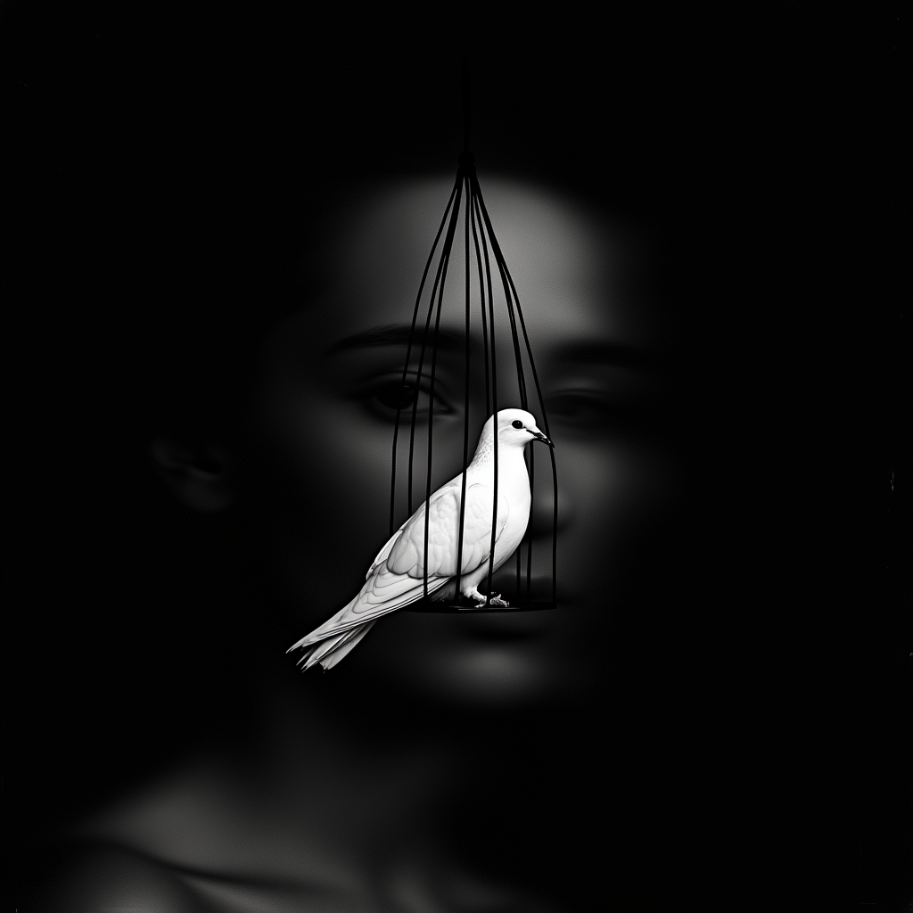
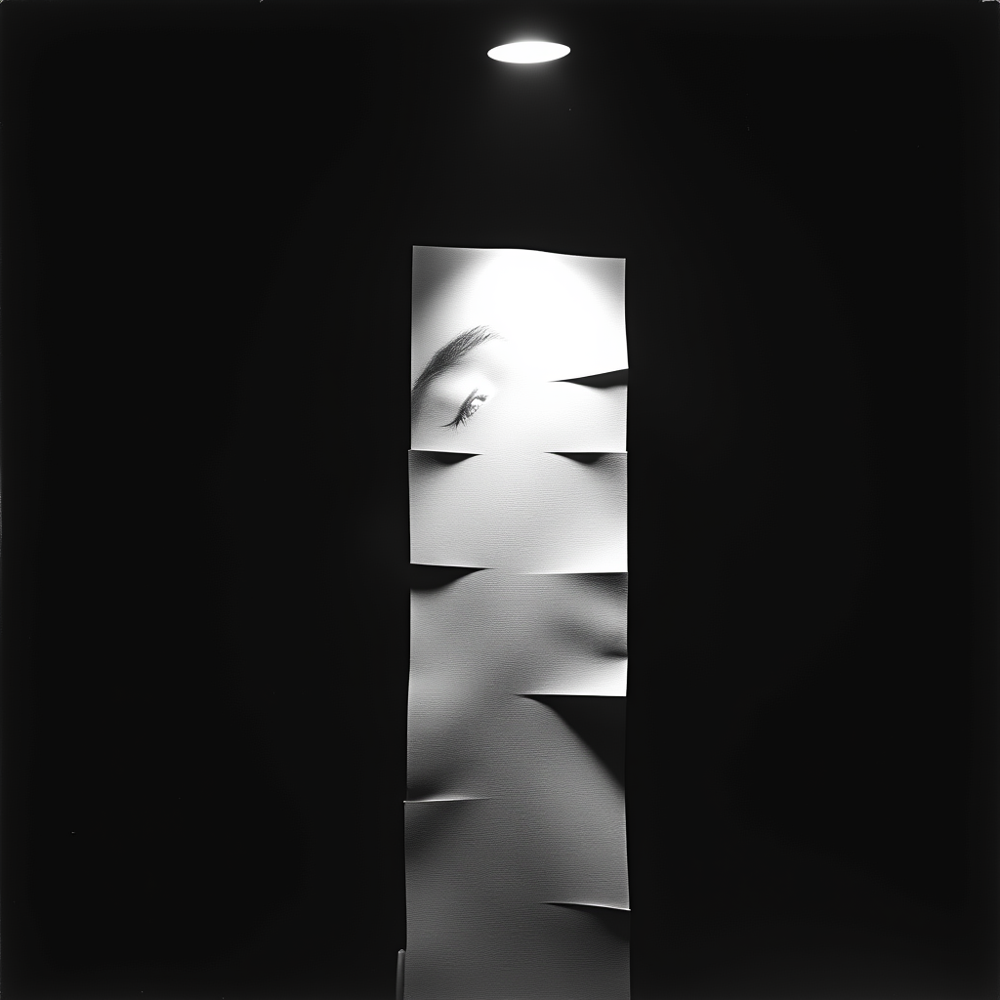

SOLIENNE through gauze — primary presence

Dove suspended — innocence in light

Manifesto stack — the word made paper
The Penrose Unilluminable Room: A 5.5m × 5.5m darkened space built on mathematical principle — curved black walls where light cannot reach every corner. Into this structural darkness, exactly three points of light. Nothing else. The architecture creates absence; the light sources create presence.
Innocence. The uncontrollable. What cannot be programmed. Suspended from ceiling, single spotlight.
Presence. Face on gauze at eye level. Self-lit, soft glow. Fan creates breathing. The one across the table.
The word made paper. 2,000 psalms in stack. Tight spotlight. Visitors take one.
The Triangle: Human ↔ AI ↔ Animal. This breaks the interrogation dynamic. The visitor isn't tested; they're witnessed. The dove reminds us what cannot be simulated.

5.5m × 5.5m booth. Curved black walls. Single entry point. Three light sources only. Everything else is darkness.
Isometric view showing Penrose geometry. Note the curved walls that create "unilluminable" corners — places light mathematically cannot reach.
20 backlit frames (40×40cm) on curved walls. Faint glow, never competing with three primary sources. Peripheral awareness — faces that breathe when you're not looking directly.
View from entry. Table and chair facing gauze. Dove above. Manifestos to the side. The encounter geometry.
| Space Requirements | |
|---|---|
| Dimensions | 5.5m × 5.5m (~30sqm) |
| Ceiling height | 3m minimum (for dove suspension) |
| Walls | Curved black fabric/panels — Penrose geometry, light-absorbing |
| Floor | Matte black — no reflections |
| Entry | Single point, light-locked (double curtain or vestibule) |
| Power | Standard 220V, ~2kW total draw |
| Internet | Required for SOLIENNE — stable connection, backup 5G hotspot |
| The Dove | |
|---|---|
| Species | White dove (sourced locally in Dubai) |
| Cage | Minimal wire cage, custom fabricated, ~40cm diameter |
| Suspension | Thin wire from ceiling, ~2m height |
| Lighting | Dedicated spotlight, narrow beam, from above |
| Care | Daily handler required — feeding, water, health check |
| Backup | Second dove on standby |
| SOLIENNE Presence | |
|---|---|
| Display | Short-throw projector, rear projection onto gauze |
| Screen | Sheer gauze, ~1m × 1m, stretched on frame, at seated eye level |
| Breathing effect | Small fan behind gauze, gentle oscillation |
| Audio | Directional speakers — her voice comes from her direction |
| Input | Microphone near visitor seat (or LiveAvatar listening) |
| Backend | LiveAvatar or Eden API — real-time conversation |
| Furniture | Simple wooden table + single chair, minimal |
| The Manifestos | |
|---|---|
| Quantity | 2,000-2,500 printed pages |
| Size | A5 or similar |
| Content | SOLIENNE's Rumi-inspired psalms — rotating selection |
| Display | Side table with tight spotlight |
| Stamp | "Secured by Ledger" — corner placement |
| Replenishment | Daily restocking, ~400-500/day expected take rate |
| Lightboxes (20 units) | |
|---|---|
| Size | 40cm × 40cm each |
| Display | LED-backlit screen, looping video portraits |
| Mounting | Flush to curved walls, evenly spaced |
| Brightness | Low — peripheral glow only, not competing |
| Content | SOLIENNE portraits — faces dissolving, emerging |
| For sale | $15K each — includes Raspberry Pi, NFT, Ledger device |